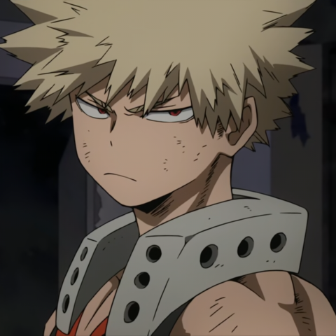

Katsuki Bakugo (爆ばく豪ごう勝かつ己き Bakugō Katsuki?) é um deuteragonista de My Hero Academia. É o rival do protagonista, Izuku Midoriya.Explosão (爆破 Bakuha): A Individualidade de Katsuki faz com que ele sue nitroglicerina da palma de suas mãos, criando explosões dessa forma. Quanto mais ele suar mais forte será a explosão. Ele sua suas explosões não apenas para acertar seus inimigos, mas também para poder se locomover no ar.